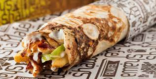

Basic meals
- Zinger
Chicken zinger Chicken is one of the most sought-after types of meat in the world, as it is characterized by the low calories it contains. It also contains many vitamins and minerals that the body needs, and many famous dishes can be prepared from it while retaining its distinctive flavor and unique taste when using seasonings and condiments. different. Today, Madam, we will present to you a way to prepare chicken zingers, which are the most popular types of quick sandwiches and loved by many people who love the spicy taste and crispy chicken.
- Shawarma
Shawarma is one of the most popular dishes that is in great demand among people. It requires high skill in cooking and its arts in order to obtain the distinctive flavor with an attractive taste. Restaurants that prepare shawarma meals are now at the top of the list in demand at all times, and these restaurants are found everywhere, and one of the most famous countries in which shawarma is known and the first to introduce it is Turkey. There are many types of shawarma, including: meat shawarma, either beef or sheep, chicken shawarma, and fish shawarma, and the latter did not enjoy the popularity and desire of the people and therefore it is no longer prepared in restaurants.
Chicken shawarma is one of the most popular types of sandwiches in our Arab world and the Middle East, which is served with mayonnaise sauce and salad. Ingredients *Boneless chicken breast. *Two onions, chopped into slices. *Two cloves of garlic, finely chopped. *Half a teaspoon of mixed spices. *Half a teaspoon of salt. *A teaspoon of sumac. *A pinch of black pepper. *A quarter cup of vegetable oil.

- burger
- chicken burger
The crispy chicken burger consists of a breaded chicken breast, seasoned with a special mixture, fried and topped with a special homemade sauce. Assembled on a soft, toasted, buttery bun with honey mustard sauce, topped with coleslaw, 4 pickles, and a slice of cheese
- Beef burger
Burgers or hamburgers are considered one of the most widespread fast foods in the world. It is one of the delicious and favorite meals, especially among young people. It is prepared with either beef or chicken, with vegetables and cheese. There are stories that say that the origin of the hamburger goes back to the German city of Hamburg, where it was transported by a group of German sailors to the United States of America by chance. The story says that one day a group of German sailors visited a restaurant in America, and they asked the chef to prepare a meal for them with certain specifications, and they taught him how to make burgers, so he made them for them, then he tasted them and was very impressed by them, so he decided to make them in his restaurant, and offered them to his customers for free. As a form of propaganda in the first month, then it quickly spread throughout the United States of America, and from there to the whole world.
- Grape leaves
Grape leaves are considered one of the ancient Ottoman food dishes known in the Arab countries, especially the Levant, Egypt, and Iraq, where they can be considered a main meal served alongside meat or chicken, or as an appetizer dish served alongside various main dishes, and the methods of preparing grape leaves vary. Depending on the ingredients involved in its preparation, there are grape leaves with rice, or with pine nuts filling, or with meat, or with chicken, so in this topic we will introduce you to different ways of cooking grape leaves. Grape leaves with meat Ingredients: Half a cup of lemon juice. A little soft cinnamon. Half a kilogram of minced meat. A cup of rice. A quarter teaspoon of mixed spice. A kilogram of grape leaves. A quarter cup of finely chopped parsley.
appetizers
-
Falafel
Falafel Falafel is considered one of the popular and traditional foods that is widespread in most Arab countries, specifically the countries of the Levant. It is possible for the housewife to serve it for breakfast or for dinner. This food is distinguished by being accessible to all segments of society, as it is inexpensive and its ingredients are simple. We will learn about it in... This article is about how to prepare Iraqi falafel.
-
Tabbouleh
Iraqi Tabbouleh Tabbouleh is a type of popular salad that is famous in the Levant region, and from there it has spread to the countries of the Mediterranean basin. It is also prepared in Brazil and the Dominican Republic, where it was transmitted to them by Syrian and Lebanese immigrants. Tabbouleh is considered one of the delicious and distinctive appetizers that people greatly desire. Especially with certain dishes such as kibbeh, fish, and some types of pies, which are prepared in more than one way with a slight difference in the ingredients, and according to the country in which they are prepared. In this article, we will present to you the method of making Iraqi tabbouleh, and it does not differ in the way it is prepared from Syrian tabbouleh.
Iraqi tabbouleh with fried kibbeh. Ingredients
- Three bunches of parsley
- Three tomatoes
- An onion
- Three quarters of a cup of fine bulgur
- A quarter cup of finely chopped green mint
- Half a cup of lemon juice
- A quarter cup of salt
- Three leaves of lettuce
- A quarter cup of olive oil

- Kibbeh
Kibbeh is considered one of the delicious and very delicious Eastern Arab dishes, as its roots go back to the Levant, especially Syria, Lebanon, Palestine, and Jordan, in addition to Iraq and Kuwait. Each country makes it differently from the other country in terms of shape, flavor, taste, and methods of preparation and presentation. Kibbeh consists mainly of Bulgur and meat. Kibbeh is cooked in several ways, including grilling, frying with oil or ghee, and cooking with milk. It is also found in many types, including: Aleppo kibbeh, raw kibbeh, labneh kibbeh, Siwar al-Sit kibbeh, stuffed kibbeh, cherry kibbeh, saffarjila kibbeh, sour kibbeh, and Iraqi kibbeh. , Taman kibbeh, grilled kibbeh, and potato kibbeh. In this article, we will talk about how to prepare and prepare kibbeh dough.
- hummus
Salted chickpeas are used in preparing many types of food, and it is recommended to add them to daily meals as they are a rich source of magnesium, sodium, potassium, iron, and folate, as they maintain sugar levels in the body. Today in our topic, we will share the recipes for preparing this type of legume.

- Bean
Beans and falafel are two popular foods that go together, and despite their simplicity, they have important nutritional value, as beans are known to be the meat of the poor, due to their richness and the body’s need for them. Friday is usually the day designated for eating the delicious fava beans meal for breakfast, as this dish brings the family together in an atmosphere of happiness and joy, and the housewife can prepare it at home in easy and simple ways, in a short time without putting in much effort, as it can be prepared with various recipes.